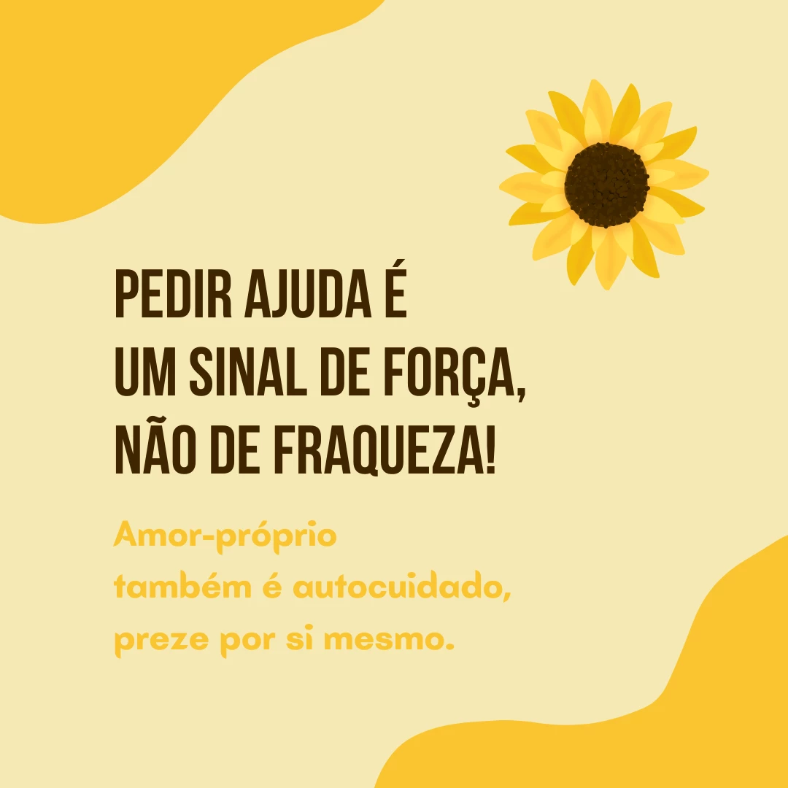

Setembro Amarelo é o mês (de 1 a 30 de setembro) dedicado à prevenção do suicídio. Trata-se de uma campanha, que teve início no Brasil em 2015, e que visa conscientizar as pessoas sobre o suicídio, bem como evitar o seu acontecimento.
O suicídio é uma triste realidade que atinge o mundo todo e gera grandes prejuízos à sociedade. De acordo com a última pesquisa realizada pela Organização Mundial da Saúde - OMS em 2019, são registrados mais de 700 mil suicídios em todo o mundo, sem contar com os episódios subnotificados, pois com isso, estima-se mais de 01 milhão de casos. No Brasil, os registros se aproximam de 14 mil casos por ano, ou seja, em média 38 pessoas cometem suicídio por dia.
Quando uma pessoa decide terminar com a sua vida, os seus pensamentos, sentimentos e ações apresentam-se muito restritivos, ou seja, ela pensa constantemente sobre o suicídio e é incapaz de perceber outras maneiras de enfrentar ou de sair do problema. Essas pessoas pensam rigidamente pela distorção que o sofrimento emocional impõe
As taxas variam entre países, regiões e entre homens e mulheres. No Brasil, 12,6% por cada 100 mil homens em comparação com 5,4% por cada 100 mil mulheres, morrem devido ao suicídio. As taxas entre os homens são geralmente mais altas em países de alta renda (16,6% por 100 mil). Para as mulheres, as taxas de suicídio mais altas são encontradas em países de baixa-média renda (7,1% por 100 mil).
"Respeitar as lutas que os outros travam sozinhos é o jeito mais verdadeiro de empatia." "Enquanto houver vida, há esperança!" "Só me fale o que está sentindo e tentarei te ajudar de alguma forma, sem julgamentos. Você é importante para mim, eu me preocupo com a sua vida!"
